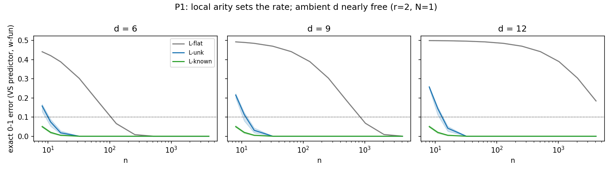
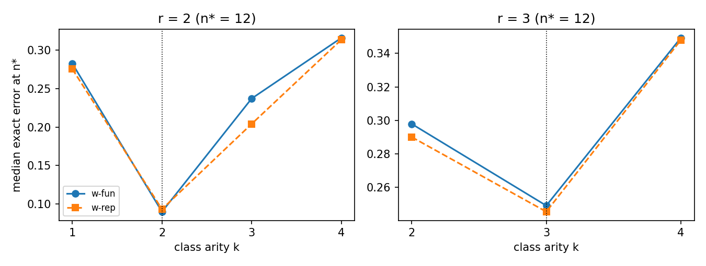
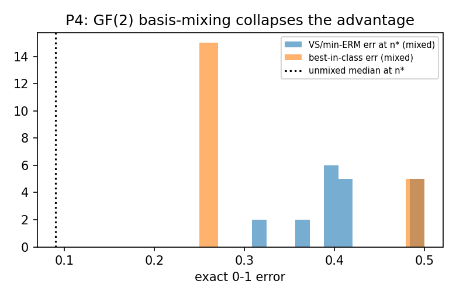
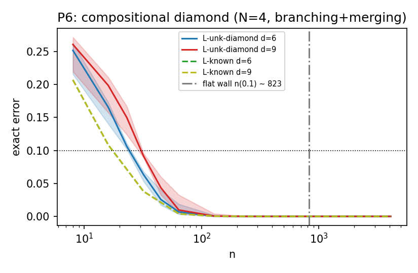
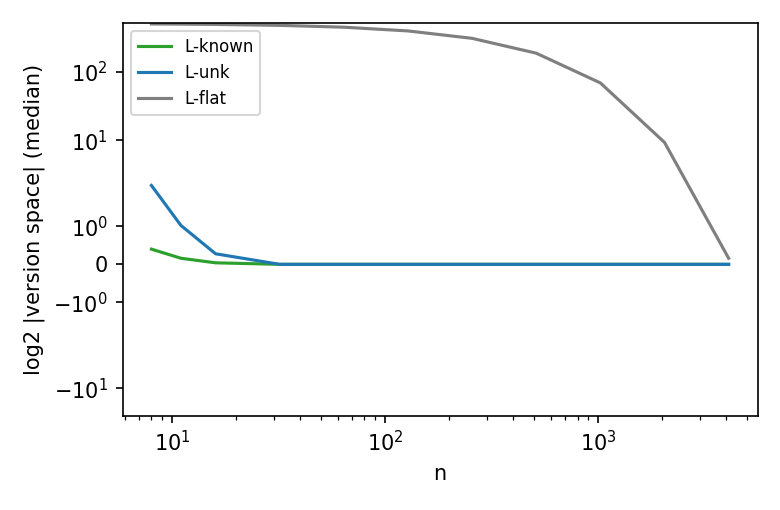
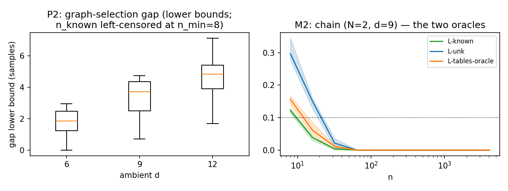

Abstract. We study realizable learning of finite-alphabet functions computed by bounded-arity computation DAGs: \(N\) internal lookup-table nodes, each reading at most \(r\) of its predecessors over an alphabet of size \(D\), wired among \(d\) input variables. A finite-class counting argument bounds the sample complexity by the local table content plus a wiring-selection term, \(N D^{r}\log D + O(N r\log(d/r))\) — set by the local arity \(r\), with the ambient dimension \(d\) entering only logarithmically, never as \(D^{d}\). The single-node Boolean case is exactly junta learning, and it already forces a near-matching \(2^{r} + r\log(d/r)\) lower bound. The same class is realized exactly — not approximated — by scalar fan-in-2 ReLU networks after a logarithmic depth inflation. Exact enumeration over the discrete classes illustrates the finite-sample signatures the bounds predict: ambient dimension is nearly free, the version-space error is smallest when the learner's arity matches the target's, and the advantage is coordinate-relative — a random \(\mathrm{GF}(2)\) change of basis erases it. The results are class-level and realizable; they do not show that gradient descent recovers the bounded-arity structure, only that the structure makes it statistically cheap to recover.
1. Introduction
A function of \(d\) symbolic variables, unconstrained, is a table of \(D^{d}\) entries; in the realizable setting learning it to error \(\epsilon\) costs on the order of \(D^{d}\) samples, because an input's label is unconstrained until that input has been seen. Structure is what escapes this wall. This note isolates one structural hypothesis — bounded local arity — and asks precisely how much it buys, for the class of functions that a bounded-fan-in computation graph can compute.
The object is a bounded-arity computation DAG: a directed acyclic graph over the \(d\) input coordinates and \(N\) named internal nodes with one designated output, in which each internal node computes an arbitrary lookup table of at most \(r\) of its parents, all variables ranging over a common alphabet of size \(D\). The target is axis-aligned — its variables are literal input coordinates and named latent nodes — so the class is defined relative to a coordinate system.
The result is a synthesis of four steps, each classical on its own. When the DAG is a single Boolean node, learning it is junta learning — recovering a function of \(r\) unknown relevant variables out of \(d\) — whose sample complexity is governed by \(2^{r}\) and \(\log d\), not \(d\). Lifting the junta table-and-relevant-set accounting to multi-node computation DAGs turns “which \(r\) variables” into “which wiring” plus “which local tables”, and the counting argument survives: the ambient dimension stays logarithmic. Such DAGs are the discrete face of the compositional functions for which deep networks provably beat shallow ones; here they are realized exactly by fan-in-2 ReLU networks. The contribution is the combination — bounded-arity DAGs with unknown wiring, an exact fan-in-limited MLP realization, and the finite-sample signatures — rather than any one of these in isolation.
The advantage is coordinate-dependent from the outset: a target local in one basis can become global after a linear change of variables, so “bounded arity” is a property of the function together with its coordinate system, not of the function alone. A control below measures this dependence directly.
Two companion notes settle the flanks. An Exact MLP Encoding of Computation Graphs settles representation: every such DAG embeds exactly into an MLP, so nothing is lost in passing from the graph to a neural network. Sample efficiency comes from the function class, not the neuron basis pins the complementary point that statistical efficiency is a property of the function class, blind to the neuron basis chosen to represent it. What neither addresses, and what this note is about, is whether the bounded-arity DAG class itself is statistically small.
2. Related work
Juntas and Boolean-function analysis. The single-node Boolean case is exactly the classical \(r\)-junta problem — learning a function of \(r\) unknown relevant variables among \(d\) — and this is the closest prior art for the note's bound. Mossel, O'Donnell & Servedio (2004) gave the first algorithm beating exhaustive search over relevant sets; the class's information-theoretic sample complexity is \(\Theta(2^{r} + r\log(d/r))\), exactly the quantity our lower bound recovers and our upper bound generalizes. The surrounding toolkit — influences, essential variables, Fourier degree, junta testing — is O'Donnell's (2014) Analysis of Boolean Functions; Blais (2009) is its tight property-testing counterpart. The Fourier-learning tradition — Kushilevitz & Mansour (1993) and Mansour (1994) — learns structured Boolean functions (decision trees, sparse-Fourier targets) with complexity set by the structure rather than \(d\), but via membership queries under the uniform distribution, where our route is realizable ERM over an explicit structure class.
Finite-class PAC, Occam, and description length. Mechanically the upper bound is a textbook finite-class argument, not a new theorem. The realizable sample bound \(m = O((\log|\mathcal H| + \log(1/\delta))/\epsilon)\) is Valiant's (1984) PAC engine, made sound by Vapnik & Chervonenkis (1971) uniform convergence and characterized tightly by Blumer, Ehrenfeucht, Haussler & Warmuth (1989) through the VC dimension (\(\mathrm{VC}(\mathcal H) \le \log_2|\mathcal H|\) for a finite class). Their Occam's-razor theorem (1987) gives the reading we use — a consistent learner returning a short-description hypothesis is a PAC learner — so the whole contribution is to compute that description length for bounded-arity DAGs. That length is a two-part code in exactly Rissanen's (1978) minimum-description-length sense: integer structure parameters (the wiring, \(\sim N r\log d\) bits) plus table parameters (\(N D^{r}\log D\) bits), the discrete corner of the MDL/BIC model-selection tradition (Schwarz, 1978; Barron, Rissanen & Yu, 1998). The novelty is which code, not the coding theorem.
Bounded-depth circuits and compositional deep networks. The computational analogue of the class — what bounded-depth, bounded-fan-in gates can and cannot compute — is the AC\(^0\) lower-bound tradition of Furst, Saxe & Sipser (1984) and Håstad (1986), whose switching lemma makes parity exponentially hard for small-depth circuits; its learning-theoretic scion, Linial, Mansour & Nisan (1993), converts bounded-depth structure into quasi-polynomial uniform-distribution learnability through Fourier concentration. These bound expressibility and time; our note bounds samples, for targets that are bounded-arity by construction. On the neural side, the closest framing is compositional approximation: Mhaskar & Poggio (2016) and Poggio et al. (2017) prove that deep networks escape the curse of dimensionality exactly when the target is a composition of low-dimensional constituents, and Rolnick & Tegmark (2018) show depth turns local multiplicative structure into linear neuron cost. Our note is the discrete, sample-complexity cousin of this line — a lookup-table DAG in place of a smooth compositional function, and an exact fan-in-2 realization in place of an approximation — with the local arity \(r\) playing the role of the local effective dimension.
Graphical models, sparse statistics, and the capacity foil. The probabilistic mirror of the table-plus-wiring accounting is bounded-indegree graphical-model learning: Chow & Liu (1968) recover the optimal indegree-1 wiring exactly, Heckerman, Geiger & Chickering (1995) add explicit structure search, and Dasgupta (1997) proves that with a known bounded-indegree DAG the sample cost tracks the summed local table sizes \(\sum_i D^{k_i}\) — the probabilistic form of our \(N D^{r}\) table term, for distributions rather than deterministic computation. The high-dimension-but-few-active-effects principle is the statistics neighbor — the Lasso (Tibshirani, 1996), MARS (Friedman, 1991), and sparse additive models (Ravikumar et al., 2009) all make cost track the relevant coordinates and their low interaction order, not \(d\) — which bounded local arity lifts from first-order effects to arity-\(r\) discrete tables. Generic network capacity is the deliberate foil for what the note is not: VC and pseudodimension bounds scale with weights and layers (Anthony & Bartlett, 1999; Bartlett et al.'s (2019) \(\tilde O(WL)\)), and norm-based control with weight scale and depth (Neyshabur, Tomioka & Srebro, 2015) — none keyed to a discovered local arity, so the \(N D^{r}\log D + \log d\) bound is a different, structure-specific accounting from generic capacity theory.
Architectural locality and learned sparsity. Restricting connectivity to reduce statistical burden is the oldest idea in the practice: Fukushima's (1980) Neocognitron and LeCun et al.'s (1998) convolutional networks cut free parameters with local receptive fields and weight sharing, and Cohen & Welling (2016) make the sample-complexity reduction explicit for symmetry groups — but each is tethered to geometric locality or a pre-assumed symmetry, where our bound keeps only the arity restriction. The route to making bounded fan-in emerge in a trained network rather than be hand-coded runs through pruning and learned connectivity — Optimal Brain Damage (1989), Han et al. (2015), \(L_0\) regularization (2018), and the lottery-ticket hypothesis (2019) — each an empirical compression or existence result that supplies no sample bound, which is the class-level gap the present note fills for an explicitly restricted bounded-fan-in function class.
Gradient descent and the discovery question. A class-level sample bound does not imply that gradient descent finds the structure, and the sparse-parity literature is the sharp stress test. Shalev-Shwartz, Shamir & Shammah (2017) exhibit learnable-but-gradient-uninformative targets; Daniely & Malach (2020) show parities are reachable by SGD under special input distributions; and Barak et al. (2022) show SGD reaches them only near the \(n^{\Theta(k)}\) computational limit, after long “hidden progress” invisible to the loss — dissociating statistical efficiency from algorithmic tractability exactly at the boundary of our claim. Nakkiran et al. (2019) add that SGD follows a simplicity-first trajectory that need not align with a prescribed decomposition. This is the discovery question we deliberately leave open (§11). The contrast that scopes the note from the other side is that unrestricted overparameterized networks can memorize arbitrary labels and yet generalize past the interpolation threshold: our advantage is a classical, capacity-controlled sample-complexity story about a restricted class, not an account of modern overparameterized generalization.
The novelty is therefore the combination, not any single ingredient: the finite-class accounting is standard, the \(N{=}1\) case is junta learning, the deep-vs-shallow intuition is the compositional-approximation line — the note's contribution is to fuse multi-node bounded-arity DAGs with unknown wiring, an exact fan-in-2 MLP realization, and exact-enumeration signatures into one object. References are listed at the end.
3. Setting
The class. All variables share a finite alphabet of size \(D\); inputs are \(x \in \Sigma^{d}\). A target is computed by a DAG over the \(d\) input coordinates and \(N\) named internal nodes with one designated output node: internal node \(v\) computes \(z_v = g_v(z_{\mathrm{pa}(v)})\) by an arbitrary lookup table over its \(r_v \le r\) parents (the fan-in, or local arity, is \(r = \max_v r_v\)); \(\Delta\) is the DAG depth. \(\mathcal F_G\) denotes the functions computable with structure \(G\) fixed and tables free; the fan-in-\(r\) class is the union over admissible structures, where node \(v\) draws its parents from a candidate set of size \(M_v \le d + N\).
Learning is realizable 0–1 classification on the output symbol: the target \(f^\star\) lies in the class, inputs are i.i.d. \(x \sim P\), and the learner sees \(S_n = \{(x_i, f^\star(x_i))\}_{i=1}^{n}\). The upper bounds and the realization results are distribution-free; the arity floor and every experiment fix \(P\) uniform, and in the enumeration test error is always the exact expectation over all \(D^{d}\) inputs, not a sampled test set. A note on logarithms: description-length statements are written with \(\log_2\) (bits), the realizable PAC bounds use the natural \(\ln\), and an unqualified \(\log\) appears only inside \(O(\cdot)\), where the base merely rescales the hidden constant.
Two learner notions run throughout. The theorems hold for every consistent learner (empirical risk minimizer) — any rule returning a hypothesis with zero empirical error, which realizability guarantees exists. The enumeration instead runs the version-space predictor: predict with a uniform draw from the hypotheses consistent with \(S_n\) — a Gibbs predictor in the standard sense: it answers a query by drawing one hypothesis uniformly from the version space and returning that hypothesis's label, rather than majority-voting the version space or committing to a single ERM hypothesis; where the version space is empty — the non-realizable arity-mismatch and basis-mixing regimes — it draws from the minimum-empirical-disagreement set. Its two weightings, uniform over structural descriptions (graph + tables) and uniform over distinct input–output functions, agree wherever both are reported, so the choice never carries a conclusion. The finite-class bounds count descriptions, so they are valid under duplicate encodings of a function; deduplication only tightens the empirical predictor (the discrete classes are duplicate-heavy — the diamond class at \(d{=}9\) has \(49{,}545{,}216\) descriptions computing \(376{,}700\) distinct functions).
4. Known-structure sample complexity
Everything rests on the textbook finite-class bound: a hypothesis class of size \(|\mathcal H|\) is learnable from \(\log|\mathcal H|\) samples, and the whole contribution is to count \(\log|\mathcal H|\) for bounded-arity DAGs. The full proofs sit beside this page in the reproducibility material; the statements and their one-paragraph arguments are here.
Lemma 1 (finite-class realizable bound). Let \(\mathcal H\) be finite with \(f^\star \in \mathcal H\), and let \(\hat h \in \mathcal H\) be any hypothesis consistent with \(S_n\). If
\[\begin{equation}\label{eq:l1} n \;\ge\; \tfrac1\epsilon\Big(\ln|\mathcal H| + \ln\tfrac1\delta\Big), \end{equation}\]then with probability at least \(1-\delta\), \(\mathrm{err}_P(\hat h) \le \epsilon\).
Proof. Fix \(h\) with \(\mathrm{err}_P(h) \gt \epsilon\): each sample is consistent with \(h\) with probability below \(1-\epsilon\), so \(h\) survives all \(n\) with probability below \((1-\epsilon)^{n} \le e^{-\epsilon n}\) (from \(1+x \le e^{x}\)). A union bound over the at most \(|\mathcal H|\) such \(h\) makes the survival probability of any \(\epsilon\)-bad hypothesis below \(|\mathcal H|\,e^{-\epsilon n} \le \delta\) at \eqref{eq:l1}; a consistent \(\hat h\) exists by realizability and is then \(\epsilon\)-good. \(\square\) The bound is the plain \(\epsilon^{-1}(\ln|\mathcal H| + \ln(1/\delta))\) form, with no \(\log(1/\epsilon)\) factor.
Lemma 2 (counting a known DAG). For a fixed graph \(G\) with node arities \(r_v \le r\),
\[\begin{equation}\label{eq:l2} \log_2|\mathcal F_G| \;\le\; \sum_{v} D^{r_v}\log_2 D \;\le\; N\,D^{r}\log_2 D. \end{equation}\]Proof. A description fixes each node's table (\(\prod_v D^{D^{r_v}}\) choices); functions are at most descriptions. \(\square\)
Known-structure bound. Every consistent learner over \(\mathcal F_G\) reaches error \(\epsilon\) with probability at least \(1-\delta\) from \(n = O\big(\tfrac1\epsilon[\,N D^{r}\log D + \log(1/\delta)\,]\big)\) samples — Lemma 1 with Lemma 2.
5. Unknown-wiring sample complexity
When the wiring is unknown the learner must also pay to select the graph. The point of the bound is that this selection cost is only logarithmic in the ambient dimension: choosing \(r\) parents for each node out of \(M_v \le d+N\) candidates adds \(r\log(eM_v/r)\) per node, not a factor of \(D^{d}\).
Lemma 3 (counting an unknown DAG). Fix the node set (count \(N\), labels), the designated output, the alphabets, and candidate-parent sets of sizes \(1 \le r \le M_v \le d+N\) with \(\mathrm{pa}^\star(v) \subseteq\) the candidates for every node (realizability; arity \(r \ge 1\), so \((eM_v/r)^{r}\) is meaningful). Let \(\mathcal F\) be all functions computed by choices of parent sets of size at most \(r\) drawn from the candidates (acyclic) together with tables. Then
\[\begin{equation}\label{eq:l3} \log_2|\mathcal F| \;\le\; \sum_v\Big[r\log_2\tfrac{eM_v}{r} + D^{r}\log_2 D\Big] \;=\; N D^{r}\log_2 D + O\!\Big(N r\log\tfrac{e(d+N)}{r}\Big). \end{equation}\]Proof. Every \(f \in \mathcal F\) has, by definition, an acyclic description with parent sets of size at most \(r\) — no padding needed — so \(|\mathcal F|\) is at most the number of all (parent-sets, tables) tuples, acyclic or not (dropping acyclicity only enlarges the count): \(|\mathcal F| \le \prod_v \big[\sum_{j \le r}\binom{M_v}{j}\big] D^{D^{r}}\), where a fan-in-\(j\) table with \(j \lt r\) is subsumed by \(D^{D^{j}} \le D^{D^{r}}\). The binomial sum is bounded in two lines: for \(M \ge r\), multiplying term \(j\) by \((r/M)^{j-r} \ge 1\) gives
\[\begin{equation}\label{eq:binom} \sum_{j\le r}\binom{M}{j} \;\le\; \Big(\tfrac{M}{r}\Big)^{r}\sum_{j\le M}\binom{M}{j} \Big(\tfrac{r}{M}\Big)^{j} \;=\; \Big(\tfrac{M}{r}\Big)^{r}\Big(1+\tfrac{r}{M}\Big)^{M} \;\le\; \Big(\tfrac{eM}{r}\Big)^{r}\qquad (M \ge r), \end{equation}\]using \(1+x \le e^{x}\) (the study's cells all satisfy \(M_v \ge r\): full candidate sets have \(M_v = d+N-1\), diamond leaf pairs \(M_v = d\)). Because the relaxed count never uses a topological order, unknown order is covered for free when the candidate sets are order-free. Unknown \(N\), unknown output designation, and unknown alphabets are not covered and not claimed. \(\square\)
Unknown-wiring bound. Every consistent learner over Lemma 3's class reaches error \(\epsilon\) with probability at least \(1-\delta\) from
\[\begin{equation}\label{eq:t2} n \;=\; O\!\Big(\tfrac1\epsilon\Big[N D^{r}\log D + \sum_v r\log\tfrac{eM_v}{r} + \log\tfrac1\delta\Big]\Big) \end{equation}\]samples. The graph-selection term is \(O(N\,r\log(e(d+N)/r))\) — logarithmic in \(d\); the ambient dimension never enters exponentially.
6. Arity mismatch
For the version-space predictor studied below, the finite-sample error is U-shaped in the assumed arity \(k\): below the true arity \(r\) the class underfits, while above it the enlarged class leaves more spurious consistent hypotheses. The two arms have different characters — one an approximation limit that binds every learner, the other a finite-sample effect specific to the version-space predictor.
A coordinate is essential (equivalently, relevant) to a function when the function genuinely depends on it — some pair of inputs differing only in that coordinate yields different outputs, i.e. the coordinate has strictly positive influence; a target's arity \(r\) counts its essential coordinates, and a \(k\)-junta is a function with at most \(k\) essential coordinates.
Monotone cost above, junta floor below. (a) For \(k \ge r\): the fan-in-\(\le k\) class contains the fan-in-\(\le r\) class outright, so realizability transfers unconditionally; if additionally \(\min_v M_v \ge k\) (every cell satisfies it, \(M_v = d \ge k\)), the unknown-wiring bound applies at arity \(k\),
\[\begin{equation}\label{eq:t3k} n \;=\; O\!\Big(\tfrac1\epsilon\Big[N D^{k}\log D + \sum_v k\log\tfrac{eM_v}{k} + \log\tfrac1\delta\Big]\Big), \end{equation}\]monotone increasing in \(k\) on the admissible range \(k \le \min_v M_v\). (b) For \(k \lt r\), an approximation floor — for the node-matched single-node class (\(N{=}1\): \(k\)-juntas \(\mathcal J_k\), \(D{=}2\), uniform inputs, exact-arity essential targets):
\[\begin{equation}\label{eq:floor} \inf_{h\in\mathcal J_k}\mathrm{err}(h;f) \;\ge\; 2^{-r}\ \ \text{for every essential exact-arity-}r\ f,\qquad\text{hence}\quad c_{r,k} \;\ge\; 2^{-r} \;\gt\; 0, \end{equation}\]where \(c_{r,k}\) is the expected best-in-class error over uniform essential targets. At \(k{=}1\) the floor holds at any \(N\) (fan-in-1 compositions are 1-juntas at any size). The intermediate case — fixed node set, \(N \ge 2\), \(2 \le k \lt r\) — is left open: no cell tests it and nothing downstream depends on it.
The floor cannot hold for the unrestricted-\(N\) fan-in-\(k\) class once \(k \ge 2\): 2-ary tables include AND/OR/NOT, so fan-in-2 table-DAGs with enough nodes compute every Boolean function (two-input-gate universality — the fan-in-2 realization of §8 is itself such a DAG). The floor is therefore a statement about the node-matched class, which is exactly the class the arity-sweep enumerates.
Proof of \eqref{eq:floor}. Flip lemma: for \(D{=}2\), \(P\) uniform, and \(h\) not depending on coordinate \(i\), \(\mathrm{err}(h;f) \ge \tfrac12\mathrm{Inf}_i(f)\) where \(\mathrm{Inf}_i(f) = \Pr_x[f(x) \ne f(x \oplus e_i)]\): pair the inputs \(\{x, x\oplus e_i\}\); on a pair where \(f\) differs, \(h\) (equal on both) errs on at least one of the two equally likely points. Any \(h \in \mathcal J_k\) with \(k \lt r\) ignores some essential parent \(i\); essentiality gives at least one differing pair among the \(2^{r-1}\) co-assignments of the other parents, so \(\mathrm{Inf}_i(f) \ge 2^{-(r-1)}\). Under arbitrary \(P\) no distribution-free floor exists (an \(r\)-ary target can look \(k\)-ary on the support), which is why the theorem pins \(P\) uniform. \(\square\)
Anchor, computed exactly. At \((r,k) = (2,1)\), \(D{=}2\): the 16 two-bit tables split into 6 non-essential and 10 essential; a best 1-junta (constants included) errs \(1/4\) on each of the 8 AND/OR-type essential functions and \(1/2\) on XOR/XNOR, so \(c_{2,1} = (8\cdot\tfrac14 + 2\cdot\tfrac12)/10 = 0.3\) exactly. Exhaustive evaluation also pins \(c_{3,2} = 43/218 \approx 0.197\) and \(c_{3,1} = 55/218 \approx 0.252\), both above the \(2^{-r}\) floor, which is pointwise tight.
The finite-class upper bound is minimized at the true arity. Among arities \(k \ge r\) the finite-class upper bound \eqref{eq:t3k} is minimized at \(k = r\), by monotonicity; that \(k = r\) is moreover the smallest realizable arity is established at \(N{=}1\) by the floor \eqref{eq:floor} (and at \(k{=}1\) for any \(N\)). This is a statement about the bound, not a universal statistical theorem.
The finite-sample right arm — \(k \gt r\) hurting at fixed \(n\) — is not a property of ERM in general; it is the over-classing effect of the version-space predictor, which at larger \(k\) leaves more spurious consistent hypotheses to draw from. A deterministic Occam-ERM that returns a consistent hypothesis of minimal per-node essential fan-in collapses the right arm exactly: realizability puts \(f^\star\) (essential fan-in \(\le r\)) in the consistent set, so the minimal consistent output has essential fan-in \(\le r\); pruning inessential parents exhibits it in \(\mathcal F_r\), and Lemma 1 applied to \(\mathcal F_r\) gives exactly the arity-\(r\) rate for every \(k \ge r\). The U-shape is thus a statement about approximation (the left arm, binding on every learner) and about a specific Gibbs predictor's finite-sample ambiguity (the right arm), never about arbitrary ERM.
7. A near-matching lower bound at \(D=2\)
The upper bound's leading terms are not loose: already the single Boolean node forces them from below. The lower bound is the classical junta minimax bound; the statement and a sketch are here, with the full rare-mass argument — including the constants and the \(\log(1/\delta)/\epsilon\) term — in Appendix C.
Junta lower bound. There is a constant \(c \gt 0\) such that any learner (possibly randomized, possibly improper) that, for every distribution \(P\) on \(\{0,1\}^{d}\) and every target in the fan-in-\(r\) class, achieves error at most \(\epsilon\) with probability at least \(1-\delta\) (hypotheses: \(\epsilon \le 1/8\), \(\delta \le 1/8\), \(d \ge 2r\)) requires
\[\begin{equation}\label{eq:t4} n \;\ge\; c\,\frac{2^{r} + r\log_2(d/r) + \log_2(1/\delta)}{\epsilon}. \end{equation}\]Already the \(N{=}1\) junta subclass forces this; the \(N\)-linear upper-bound term is not matched from below, and that gap is left open. The for-every-\(P\) quantifier matches the distribution-free upper bounds.
Proof sketch (full argument in Appendix C). Since the \(r\)-junta class \(\mathcal J_r\) sits inside the fan-in-\(r\) class (\(N{=}1\)), a minimax lower bound for \(\mathcal J_r\) suffices. Two shattered sets are built by hand. VC \(\ge 2^{r}\): fix a support \(S_0\) of size \(r\); the \(2^{r}\) inputs zero off \(S_0\) are shattered by the tables on \(S_0\). VC \(\ge r\lfloor\log_2\lfloor d/r\rfloor \rfloor\): partition the \(d\) coordinates into \(r\) blocks of size \(q = \lfloor d/r\rfloor\); in block \(b\) place \(m_b = \lfloor\log_2 q\rfloor\) points whose column patterns realize all \(2^{m_b}\) binary columns, and for any labeling \(y\) set \(f = \bigoplus_b x_{j_b}\) with \(j_b\) the coordinate whose column matches \(y\) on block \(b\) — an XOR of \(r\) dictators, hence an \(r\)-junta, that shatters the point set. A standard two-point and rare-mass argument turns each shattered set of size \(m\) into an \(\Omega(m/\epsilon)\) sample lower bound and supplies the \(\log(1/\delta)/\epsilon\) term; combining via \(\max(a,b) \ge \tfrac12(a+b)\) gives \eqref{eq:t4}. \(\square\)
Consequence. At \(D{=}2\) the arity-\(r\) consistent learner is minimax-near-optimal in the leading \(2^{r}\) and \(r\log(d/r)\) dependencies (up to constants). Optimality is not claimed beyond this, and nothing is claimed for \(D \gt 2\) — which is why the headline lower bound reads “at \(D{=}2\), i.e. \(2^{r}\)”.
8. Exact fan-in-2 ReLU realization
The class is not an abstraction that happens to have small counting complexity: it is realized exactly by scalar-fan-in-2 ReLU networks — every unit reads at most two others — after a logarithmic depth inflation. This is the bridge from the DAG class to neuron-level architectures, and it refines the construction of An Exact MLP Encoding of Computation Graphs to enforce scalar fan-in at most two.
Encoding convention. The input layer is the one-hot encoding of the \(d\) symbolic variables (one group of \(D\) coordinates per variable); scalar fan-in \(k\) counts one-hot coordinates, DAG arity \(r\) counts variable groups — the two are never conflated.
Realizability at scalar fan-in 2. Every computation-graph function (arities \(r_v \le r\), depth \(\Delta\), common alphabet \(D\)) is computed exactly by a ReLU network of scalar fan-in at most 2, integer weights of magnitude at most 1 with biases in \(\{0, -1\}\) (2 bits per parameter), whose output is a designated one-hot group inside the network (no external argmax), with
\[\begin{equation}\label{eq:t5size} \begin{aligned} \text{depth} \;&\le\; \Delta\big(\lceil\log_2\max(r,2)\rceil + \lceil r\log_2 D\rceil + 1\big) \ \ \text{ReLU layers},\\ \#\text{units} \;&=\; O\!\big(N D^{r} r + N D\,\Delta\, r^{2}\log D\big), \end{aligned} \end{equation}\]where the \(r^{2}\) term carries the live-input factor \(\min(d, Nr)\).
Proof. Maintain the invariant that after processing DAG level \(\ell\), every still-needed node \(u\) owns a group of units whose activations form exactly the one-hot \(\xi_u = e_{z_u} \in \{0,1\}^{D}\); level 0 is the input encoding. For node \(v\) with parents \(p_1 \dots p_{r_v}\): conjunction trees — for each parent-value row \(c\), AND the \(r_v\) bits \(\xi_{p_j}[c_j]\) pairwise with \(\mathrm{AND}(a,b) = \mathrm{ReLU}(a+b-1)\) (exact on \(\{0,1\}\)), reaching the row indicator after \(\lceil\log_2 r_v\rceil\) layers; because each parent group is one-hot, exactly one row unit is active per input. OR trees — for each output symbol \(s\), sum the row units of \(g_v^{-1}(s)\) pairwise with \(\mathrm{SUM}(a,b) = \mathrm{ReLU}(a+b)\); since at most one summand is ever 1, all partial sums stay in \(\{0,1\}\), and after at most \(\lceil r\log_2 D\rceil\) layers the group \(\xi_v\) is one-hot again. All nodes of a level run their trees in parallel inside shared physical layers, padding shorter trees and still-needed groups with identity units (fan-in 1), so depth is per-level, never per-node. Every unit has scalar fan-in at most 2 and integer weights \(|w| \le 1\), biases in \(\{0,-1\}\). Units: node \(v\) costs \(O(D^{r_v} r_v)\) tree units; carries cost \(O(\text{live groups}\cdot D)\) per physical layer, and live groups never exceed \(N + \min(d, Nr)\), so carries total \(O\big(N D\,\Delta\,r^{2}\log D\big)\). The output node's group is the network's last-layer one-hot. \(\square\)
An executable check builds this construction and verifies, on 80 random graphs (\(D \in \{2,3\}\), \(r \in \{1,2,3\}\), \(N \in \{1,\dots,4\}\), mixed arities, plus the diamond and chain of Appendix A): exact I/O equality on all \(D^{d}\) inputs, scalar fan-in \(\le 2\), integer weights \(|w| \le 1\) with biases in \(\{0,-1\}\), the depth bound of \eqref{eq:t5size}, and one-hotness of every carried group at every level boundary.
Fan-in 1 is not enough. If every unit including the output has fan-in at most 1, then by induction every unit's activation depends on at most one input coordinate, so the output cannot equal any target essential on two or more coordinates. Allowing an unrestricted linear readout or an argmax over fan-in-1 features does not help: each score is additive across single-coordinate functions, and for XOR (\(D{=}2\)), \(s(00) + s(11) = s(01) + s(10)\) forces \(\min(s_{01}, s_{10}) \le \max(s_{00}, s_{11})\), the opposite of what correctness needs under either tie rule. Two is the smallest scalar fan-in that realizes generic \(r \ge 2\)-ary interactions. \(\square\)
Capacity: a description-length separation, not a VC separation. The class \(\mathcal F_{k,b}\) of ReLU networks with architecture \(\{m_\ell\}\), per-unit fan-in at most \(k\), and integer parameters in \(b\) bits has description count
\[\begin{equation}\label{eq:cap} \log_2|\mathcal F_{k,b}| \;\le\; \sum_{\ell} m_\ell\Big[k\log_2\tfrac{e\,m_{\ell-1}}{k} + (k+1)\,b\Big] \end{equation}\](each unit picks a \(\le k\)-subset of the previous layer, \(\binom{m_{\ell-1}}{k} \le (e m_{\ell-1}/k)^{k}\) by \eqref{eq:binom}, plus \(k\) weights and a bias). At the realizing sizes of \eqref{eq:t5size}, with \(b = 2\) and the per-unit bracket \(\tilde O(1)\), the description length is near-linear in the unit count of \eqref{eq:t5size}: \(\log_2|\mathcal F| = \tilde O(N D^{r} r + N D\,\Delta\, r^{2})\), which stays near-linear in the local-table-entry count \(N D^{r}\) whenever \(r\) and \(\Delta\) are bounded or slowly growing (substituting the depth regime \(\Delta = O(r D^{r-1})\) turns the carry term into \(\tilde O(N r^{3} D^{r})\) — still \(N D^{r}\) up to the arity factor, not a clean \(\tilde O(N r D^{r})\)). The comparison to the equally-quantized dense class is qualitative, at equal architecture and equal quantization: the dense description count is \(\Theta(\Delta' m^{2} b)\) at width \(m = \tilde O(N D^{r})\) — quadratic in a width that is itself \(\tilde O(N D^{r})\) — whereas the sparse side stays near-linear in \(N D^{r}\) up to \(\mathrm{poly}(r, \Delta)\) factors. This is a description-count comparison for a structured quantized subclass — not a claim that dense networks cannot represent these functions, and not a generic VC-dimension separation. The real-valued statement is separate and stands on its own: by Bartlett, Harvey, Liaw & Mehrabian (2019), sparse real-valued ReLU networks with \(W\) weights and \(L\) layers have VC/pseudo-dimension \(\tilde O(WL)\); it is never combined with the counting bound in one inequality. Finally, against the flat class of arbitrary \(f:\Sigma^d\to\Sigma\) (description size \(D^{d}\log_2 D\)), the bounded-arity class at \(N D^{r}\log_2 D + O(N r\log\frac{e(d+N)}{r})\) is exponentially separated once \(r \ll d\) and \(N = \mathrm{poly}(d)\).
9. A flat-class memorization pathology
This section is a cautionary example, not a proposed learner: it isolates why consistency alone is insufficient once the bounded-arity class restriction is dropped. The bounds above (Sections 4–5) are about the class: bound its size, and every consistent learner inherits the rate. Drop the class and even a consistent learner has no rate at all — a reminder that the inductive bias, not the fitting principle, is what buys efficiency.
ERM alone certifies no rate on the flat class. There is a consistent learner over the flat class of all functions \(\Sigma^d\to\Sigma\) needing \(n = \Omega(D^{d})\) samples to reach error \(\le \tfrac12\) on a fan-in-\(r\) realizable target under uniform inputs, while every consistent learner over the matched bounded-arity class needs only \(\tilde O(N D^{r})/\epsilon\).
Proof. Assume \(D \ge 2\), so the symbols \(0\) and \(1\) are distinct. Fix the constant target \(f^\star \equiv 1\) (fan-in \(0 \le r\), realizable). Define the learner \(\hat h\) by a fixed rule that never references \(f^\star\): predict the observed label on each seen input, and a fixed default symbol \(0\) on every unseen input. \(\hat h\) reproduces the training labels, so its empirical error is 0 and it is a valid ERM output for the flat class. Since \(f^\star \equiv 1\) and \(\hat h = 0\) off the sample, \(\hat h\) is wrong on every unseen input; \(n\) samples cover at most \(n\) distinct inputs, so
\[\begin{equation}\label{eq:t6} \mathrm{err}(\hat h) \;=\; 1 - \tfrac{\#\{\text{distinct inputs seen}\}}{D^{d}} \;\ge\; 1 - n\,D^{-d} \qquad\text{deterministically}, \end{equation}\]and error \(\le \tfrac12\) forces \(n \ge \tfrac12 D^{d}\). The rule is target-independent; only the constant, realizable target is adversarial — so the pathology is a property of the ERM principle on the flat class, not of a learner that peeks at \(f^\star\). \(\square\)
10. Exact-enumeration signatures
The bounds of Sections 4–7 are class-level facts, proved without reference to training dynamics. To check the finite-sample signatures they predict without SGD confounds, we enumerate the discrete classes exactly: for a sample of target functions per cell — 20 rejection-sampled essential targets (50 for the arity sweep), each averaged over 50 training-set draws — the learner's entire hypothesis class is evaluated exactly (every admissible structure and lookup table: by closed forms at \(N{=}1\) checked against literal enumeration, and by literal packed enumeration for the compositional cells), and its \(0\)–\(1\) error is the exact expectation over all \(D^{d}\) inputs, never a sampled test set. This caps reach at \(d \le 12\) but removes both optimization noise and test-set noise. Three signatures carry the story; the rest, with the seed and statistics mechanics, are in Appendices A–B.
Terminology (learners named as in the figures). L-flat ranges over the flat class of all functions \(\Sigma^{d}\to\Sigma\): it returns each seen input's label and is uniform over the alphabet on unseen inputs. L-known is the bounded-arity learner given the true support (at \(N{=}1\)) or wiring skeleton (at \(N{\ge}2\)) and enumerating all local tables on it. L-unk is the unknown-wiring learner: at \(N{=}1\) it enumerates all \(\binom{d}{k}\) fan-in-\(k\) supports and their tables; in the compositional cells the wiring shape is fixed (and the diamond's \(x_e\) input known) while the parent/leaf assignments and all tables are enumerated. L-k is L-unk run at an assumed, possibly mismatched arity \(k\) (the arity sweep), and L-tables-oracle (the chain) is L-known's complement — the true tables are known and the input wiring is enumerated. The VS predictor is the version-space Gibbs predictor of §3; its reported score is its exact expected \(0\)–\(1\) error — averaged in closed form over the uniform draw from the consistent hypotheses (or, off realizability, the minimum-empirical-disagreement set) and over all \(D^{d}\) inputs — not a Monte-Carlo estimate. Its two weightings place the uniform measure over distinct input–output functions (w-fun, the arm the verdicts gate on) or over graph-plus-table descriptions (w-rep, the sensitivity arm, under which duplicate encodings count). Best-in-class error is the exact minimum \(0\)–\(1\) error attainable inside a class — the population-optimal per-input majority label — a sample-independent approximation floor. Error bands are the interquartile range over target draws; intervals are 95% bootstrap percentile CIs (10,000 resamples, the target draw the resampling unit); and \(n(\epsilon)\) is a learner's smallest sample count whose exact error (averaged over the training draws) first crosses below \(\epsilon\), computed per target and reported as the median over targets — so the ratios below compare within-target crossings at \(\epsilon = 0.1\).
Ambient dimension is nearly free. Growing \(d\) from 6 to 12 — which squares the flat class's \(2^{d}\) domain — moves the unknown-wiring learner's \(n(0.1)\) crossing by a median within-target factor of only \(1.25\) (CI \([1.23, 1.29]\)), below the \(\approx 1.3\times\) change suggested by the two-term bound, while the flat class's own crossing at \(d{=}12\) stands \(514\times\) away (CI \([495, 532]\)). The class learners have finished before the flat curve has moved (Figure 1). The same holds through composition: for the four-node branch-and-merge diamond with unknown leaf pairs, the paired ratio is again \(1.25\) and the flat wall \(27\times\) (Appendix A).

The version-space error is minimized at the true arity. Sweeping the learner's assumed arity \(k\) against a fixed sample budget \(n^\ast = 12\) (the arity-\(2\) learner's own median crossing), the median exact error traces a U with its minimum exactly at \(k = r\): for \(r{=}2\) the medians are \(0.282,\,0.090,\,0.237,\,0.316\) at \(k = 1,2,3,4\), and for \(r{=}3\) they are \(0.298,\,0.249,\,0.349\) at \(k = 2,3,4\), minimal at \(k = 3\) (Figure 2). Both weightings agree. The two arms have the anatomy §6 assigns them, and this is measurable: decomposing each error into an approximation part (the residual error at the largest evaluated sample count, used as a proxy for approximation error) and an estimation part (the rest), the left arm at \(k{=}1\) is approximation-driven (\(0.250\) approximation vs \(0.022\) estimation — the best-1-junta floor, whose empirical mean \(0.315\) is consistent with the exact anchor \(c_{2,1}=0.3\)), while for \(k \ge r\) the approximation part vanishes (median \(0.000\)) and the entire excess is the version-space predictor's finite-sample ambiguity — the effect a deterministic Occam-ERM would remove.

The advantage is coordinate-relative. The class is defined in a basis, so composing each target with a random invertible \(\mathrm{GF}(2)\) linear map should move it out of the axis-aligned class and erase the advantage — and it does. At \((r{=}2, d{=}9)\), one map per target, the median error jumps to \(0.404\) from the unmixed \(0.090\) (Figure 3). The collapse is approximation-driven, not noise: the post-mixing best-in-class error, computed exactly per target, is \(0.25\) for 15 of 20 targets and \(0.5\) for the other 5, and the fraction of mixed targets that coincidentally re-enter a low-arity axis-aligned class is \(0/20\). The target genuinely leaves the class — which is the whole content of “the advantage is a property of the function together with its basis”.

11. Discussion and open problems
Bounded local arity turns a flat, ambient-domain learning problem into a table-plus-wiring problem: the sample complexity is set by the local arity \(r\) and the alphabet \(D\), the ambient dimension entering only through a logarithmic graph-selection term, and the enumeration of §10 bears out the predicted finite-sample behavior.
Three limits mark where the claim stops. First, this is a class-level result: it bounds the samples any consistent learner needs, and it says nothing about whether gradient descent — or any efficient algorithm — finds the bounded-arity structure. The sparse-parity literature shows the two questions are genuinely separate: a class can be statistically easy yet reachable by SGD only near the computational limit (Barak et al., 2022). Second, the advantage is basis-relative: under a random linear change of variables the target leaves the axis-aligned class and the advantage vanishes, as the mixing control confirms — consonant with the foundations note, where the representation varies with the class fixed, while here class membership itself is basis-relative. Third, the advantage is statistical, not expressive: dense networks can represent everything here, and per-neuron fan-in does not imply module-level fan-in — a module of many fan-in-\(k\) neurons can collectively read many variables.
The open problems are the natural next rungs. The lower bound matches only the single-node terms; a matching bound with the \(N\)-linear dependence, and any lower bound for \(D \gt 2\), are open. The realization is exact but passive; an efficient recovery algorithm for the bounded-arity DAG under stated assumptions is not given. And the decisive successor is the discovery question stated as a falsifiable test: do SGD-trained fan-in-\(k\) MLPs, at matched budget, reproduce the arity-matched error minimum and the ambient-dimension flatness on these same targets? A negative answer would mean the class-level advantage does not transfer to training dynamics — the one thing the present, exact-enumeration evidence cannot settle.
Appendix A. Further signatures
The enumeration ran eleven cells at \(D{=}2\) unless stated (20 target draws each, 50 for the arity sweep), spanning single nodes at \(r \in \{1,2,3\}\) and \(d \in \{6,9,12\}\), a two-node chain, the four-node diamond, a \(D{=}3\) cell, and basis-mixing and label-shuffle controls. Beyond the three signatures of §10, the following corroborate the two-term bound.
The graph-selection cost is positive and slowly growing. The unknown-wiring learner pays a positive gap over the known-structure learner at every \(d\): median gaps \(1.9,\,3.7,\,4.8\) samples at \(d = 6,9,12\) (all 20 targets positive at each \(d\); Figure 6, left). The known-structure learner's crossing is left-censored at the grid floor \(n_{\min}=8\) — a 16-entry table class is pinned almost immediately — so these are conservative lower bounds, and the bound's predicted slow (logarithmic) growth in \(d\) cannot be separately resolved at these scales beyond positivity.
The two costs superpose. On the two-node chain, the complementary oracles decompose the total: at \(d{=}6\), \(n_{\text{known}} + n_{\text{tables-oracle}} = 9.7 + 9.8 = 19.5\) against \(n_{\text{unknown}} = 16.9\) (ratio \(1.16\)); at \(d{=}9\), \(9.7 + 13.1 = 22.8\) against \(20.7\) (ratio \(1.10\)) — table-learning and graph-selection costs add approximately, as the two-term bound suggests (Figure 6, right). Here the unknown-wiring learner knows the wiring shape, so its graph-selection component measures input-assignment selection under a known shape.
Alphabet direction. At \((N{=}1, r{=}2, d{=}6)\), raising \(D\) from 2 to 3 moves the median crossing by \(1.76\times\) (CI \([1.61, 1.86]\)) — the direction the \(D^{r}\) law predicts, though below its \(\approx 3.6\times\) point value at this single small scale.
The compositional diamond. The four-node branch-and-merge family
\[\begin{equation}\label{eq:diamond} z_1 = g_1(x_a, x_b),\quad z_2 = g_2(x_c, x_d),\quad z_3 = g_3(z_1, z_2),\quad y = g_4(z_3, x_e), \end{equation}\]with \(a,b,c,d,e\) distinct, reproduces the ambient-dimension flatness of §10 under composition: raising \(d\) from 6 to 9 (distractor coordinates \(1 \to 4\), candidate skeletons \(90 \to 756\)) moves the crossing by a paired ratio \(1.25\) (CI \([1.21, 1.27]\)) while the flat wall stands \(27\times\) away (Figure 4). Targets are drawn uniformly subject to global essentiality; test error is exact over all \(D^{d}\) inputs.

The version space burns its bits. Every finite-class bound runs on one quantity — how fast the version space shrinks. Measured directly at \(n^\ast\), the median \(\log_2|\text{version space}|\) is \(0.13\) (known structure) \(\lt 0.84\) (unknown wiring) \(\lt 500.0\) (flat), and the flat arm's measured value tracks its exact counting prediction \(2^{d}(1-2^{-d})^{n^\ast} = 500.13\) to a slope ratio of \(1.01\) (Figure 5) — tying the measured curves back to the counting arguments of §4–§5.


Controls. With training labels shuffled independently per distinct input (error still measured against the true function), every learner sits at chance at \(n = 512\) — medians \(0.501\), \(0.496\), \(0.504\) — so nothing in the pipeline leaks labels; and the exact anchor \(c_{2,1} = 0.300\) doubles as a correctness check of the closed-form junta machinery.
Appendix B. Reproducibility
The enumeration is parameter-free: every learner is an exact procedure over an explicit class with a single prediction rule, so there are no hyperparameters and no training loop. All randomness derives from \(\text{seed} = \mathrm{SHA256}(\text{cell}, \text{target}, n, \text{draw}) \wedge \text{0xFFFFFFFF}\). Curves are medians over targets of per-target means over sample draws; intervals are 95% bootstrap percentile CIs (10,000 resamples, target-draw unit); paired comparisons use one-sided exact-binomial sign tests on within-target differences. The design — classes, cells, arity grid, thresholds, and statistics — was fixed before the enumeration was run. Exact enumeration buys exactness and pays reach: \(d \le 12\), description counts under \(5\times10^{7}\), and a grid floor \(n_{\min}=8\) that left-censors the known-structure baselines.
git 84d947b (analysis, byte-identical under
A04; figures re-rendered by A04 with in-plot titles dropped; enumeration data @ 3bf8e15)
· seeds SHA256-derived per configs/enum_v1.yaml
· src/run_enum.py --pilot → src/run_enum.py --all →
src/analyze.py (writes results/analysis.json + all figures) · witness
src/verify_t5.py · full proofs report/theory_proofs.md.
Appendix C. Proof of the junta lower bound
This appendix gives the argument §7 sketches, in full: the two shattered sets, the rare-mass and two-point reductions that turn them into a sample lower bound, and the constants and the \(\log(1/\delta)/\epsilon\) term the sketch compresses. Throughout \(D = 2\); it suffices to bound the \(r\)-junta subclass \(\mathcal J_r\) — the \(N{=}1\) fan-in-\(r\) class — since a minimax lower bound for a subclass lower-bounds the whole. The learner may be randomized and improper, and must succeed for every distribution \(P\) on \(\{0,1\}^{d}\), matching the distribution-free upper bounds.
Two shattered sets. \(\mathrm{VC} \ge 2^{r}\): fix a support \(S_0\) with \(|S_0| = r\); the \(2^{r}\) inputs that are zero off \(S_0\) are shattered by the arity-\(r\) tables on \(S_0\) — every labeling of them is realized by some table, and functions on other supports can only add labelings, never lower a shattering bound.
\(\mathrm{VC} \ge r\lfloor\log_2\lfloor d/r\rfloor\rfloor\) (block-dictator construction, needs \(d \ge 2r\)): partition the \(d\) coordinates into \(r\) blocks of size \(q = \lfloor d/r\rfloor\) and set \(m_b = \lfloor\log_2 q\rfloor \ge 1\). In block \(b\) place \(m_b\) points, each supported on block \(b\) alone (zero elsewhere), whose column patterns over the block's coordinates realize all \(2^{m_b}\) binary columns — possible since \(2^{m_b} \le q\). Given any labeling \(y\) of the \(\sum_b m_b\) points, choose in each block the coordinate \(j_b\) whose column equals \(y\) restricted to that block, and set \(f = \bigoplus_b x_{j_b}\), an XOR of \(r\) dictators — hence an \(r\)-junta. On a block-\(b\) point every other block's chosen coordinate reads \(0\), so \(f = x_{j_b}\) delivers exactly the required label; the point set is shattered.
To read the second set as \(\Omega(r\log(d/r))\), handle the floors once. For \(x \ge 2\), writing \(x \in [2^{k}, 2^{k+1})\) with \(k \ge 1\) gives \(\lfloor x\rfloor \in [2^{k}, 2^{k+1})\), so \(\lfloor\log_2\lfloor x\rfloor\rfloor = k \ge \tfrac{k}{k+1}\log_2 x \ge \tfrac12\log_2 x\); at \(x = d/r \ge 2\) (the hypothesis \(d \ge 2r\)),
\[\begin{equation}\label{eq:cfloor} r\big\lfloor\log_2\lfloor d/r\rfloor\big\rfloor \;\ge\; \tfrac{r}{2}\log_2\tfrac{d}{r} \;=\; \Omega\!\big(r\log(d/r)\big). \end{equation}\]A shattered set of size \(m\) forces \(\Omega(m/\epsilon)\) samples. Let \(\{x_0, \dots, x_{m-1}\}\) be shattered, \(m \ge 2\). Put \(P(x_0) = 1 - 8\epsilon\) and \(P(x_j) = 8\epsilon/(m-1)\) for \(j \ge 1\), and draw the target uniformly among the \(2^{m-1}\) shattered labelings that fix \(f(x_0)\) — all realizable by shattering, and fixing \(x_0\)'s label leaves the remaining labels i.i.d. uniform. Suppose \(n \le (m-1)/(64\epsilon)\). Each rare point is unseen with probability \((1 - \tfrac{8\epsilon}{m-1})^{n} \ge 1 - \tfrac{8\epsilon n}{m-1} \ge \tfrac78\), so \(\mathbb{E}[\#\text{unseen}] \ge \tfrac78(m-1)\). Define the rare-mass error
\[\begin{equation}\label{eq:crare} X \;=\; \tfrac{8\epsilon}{m-1}\,\#\{\,j \ge 1 : \hat h(x_j) \ne f(x_j)\,\} \;\in\; [0, 8\epsilon], \qquad X \;\le\; \mathrm{err}_P(\hat h). \end{equation}\]On an unseen rare point the target label is uniform and independent of the learner's (possibly randomized) prediction, so it is wrong with probability exactly \(\tfrac12\); hence \(\mathbb{E} X \ge \tfrac12\cdot\tfrac{8\epsilon}{m-1}\cdot\tfrac78(m-1) = 3.5\,\epsilon\), the expectation taken jointly over target, sample, and learner randomness. Reverse Markov on \(X \in [0, 8\epsilon]\) gives
\[\begin{equation}\label{eq:crevmarkov} \Pr[X \gt \epsilon] \;\ge\; \frac{\mathbb{E} X - \epsilon}{8\epsilon - \epsilon} \;\ge\; \frac{2.5}{7} \;=\; \tfrac{5}{14} \;\gt\; \tfrac18 \;\ge\; \delta, \end{equation}\]so, averaging over targets, some fixed target has \(\Pr_{\text{sample}}[\mathrm{err} \gt \epsilon] \gt \delta\): the learner fails unless \(n \gt (m-1)/(64\epsilon)\), i.e. \(n = \Omega(m/\epsilon)\) since \(m - 1 \ge m/2\).
The \(\Omega(\log(1/\delta)/\epsilon)\) term. Take two shattered points with \(P(x_0) = 1 - 2\epsilon\) and \(P(x_1) = 2\epsilon\); shattering supplies targets \(f_0, f_1 \in \mathcal J_r\) agreeing at \(x_0\) and differing at \(x_1\). Let \(E\) be the event “\(x_1\) unseen”, \(\Pr[E] = (1 - 2\epsilon)^{n}\). For \(\epsilon \le \tfrac18\), \(-\ln(1 - 2\epsilon) \le 2.304\,\epsilon\), so at \(n \le \ln(1/\delta)/(4\epsilon)\), \(\Pr[E] \ge \delta^{0.576}\). On \(E\) the sample is identical under \(f_0\) and \(f_1\), so the learner's prediction at \(x_1\) has the same law under both and errs against at least one with conditional probability \(\ge \tfrac12\); a wrong \(x_1\) costs error \(\ge 2\epsilon \gt \epsilon\). Hence
\[\begin{equation}\label{eq:ctwo} \max_i\ \Pr_{f_i}[\mathrm{err} \gt \epsilon] \;\ge\; \tfrac12\,\delta^{0.576} \;\ge\; 1.2\,\delta \;\gt\; \delta \qquad (\delta \le \tfrac18), \end{equation}\]the ratio \(\tfrac12\delta^{0.576-1}\) being \(\ge 1.2\) at \(\delta = \tfrac18\) and larger as \(\delta\) shrinks.
Combining. Apply the rare-mass bound with \(m = \max\!\big(2^{r},\, r\lfloor\log_2\lfloor d/r\rfloor\rfloor\big)\) — at least \(\max\!\big(2^{r},\, \tfrac{r}{2}\log_2(d/r)\big)\) by \eqref{eq:cfloor} — together with the two-point bound \eqref{eq:ctwo}, and use \(\max(a, b) \ge \tfrac12(a + b)\) to add the three contributions:
\[\begin{equation}\label{eq:clower} n \;\ge\; c\,\frac{2^{r} + r\log_2(d/r) + \log_2(1/\delta)}{\epsilon} \end{equation}\]for an absolute constant \(c \gt 0\), under \(\epsilon \le \tfrac18\), \(\delta \le \tfrac18\), \(d \ge 2r\) — the bound of §7. Only the \(N{=}1\) subclass is used, so the \(N\)-linear upper-bound term is not matched from below; that gap, and any lower bound for \(D \gt 2\), stay open.
References
Anthony, M., & Bartlett, P. L. (1999). Neural Network Learning: Theoretical Foundations. Cambridge University Press.
Barak, B., Edelman, B., Goel, S., Kakade, S., Malach, E., & Zhang, C. (2022). Hidden progress in deep learning: SGD learns parities near the computational limit. NeurIPS 2022.
Barron, A., Rissanen, J., & Yu, B. (1998). The minimum description length principle in coding and modeling. IEEE Transactions on Information Theory, 44(6), 2743–2760.
Bartlett, P. L., Harvey, N., Liaw, C., & Mehrabian, A. (2019). Nearly-tight VC-dimension and pseudodimension bounds for piecewise linear neural networks. Journal of Machine Learning Research, 20(63), 1–17.
Belkin, M., Hsu, D., Ma, S., & Mandal, S. (2019). Reconciling modern machine-learning practice and the classical bias–variance trade-off. PNAS, 116(32), 15849–15854.
Blais, E. (2009). Testing juntas nearly optimally. Proc. 41st ACM Symposium on Theory of Computing (STOC), 151–158.
Blumer, A., Ehrenfeucht, A., Haussler, D., & Warmuth, M. K. (1987). Occam's razor. Information Processing Letters, 24(6), 377–380.
Blumer, A., Ehrenfeucht, A., Haussler, D., & Warmuth, M. K. (1989). Learnability and the Vapnik–Chervonenkis dimension. Journal of the ACM, 36(4), 929–965.
Chow, C. K., & Liu, C. N. (1968). Approximating discrete probability distributions with dependence trees. IEEE Transactions on Information Theory, 14(3), 462–467.
Cohen, T. S., & Welling, M. (2016). Group equivariant convolutional networks. ICML 2016, PMLR 48, 2990–2999.
Daniely, A., & Malach, E. (2020). Learning parities with neural networks. NeurIPS 2020.
Dasgupta, S. (1997). The sample complexity of learning fixed-structure Bayesian networks. Machine Learning, 29, 165–180.
Frankle, J., & Carbin, M. (2019). The lottery ticket hypothesis: finding sparse, trainable neural networks. ICLR 2019.
Friedman, J. H. (1991). Multivariate adaptive regression splines. The Annals of Statistics, 19(1), 1–67.
Fukushima, K. (1980). Neocognitron: a self-organizing neural network model for a mechanism of pattern recognition unaffected by shift in position. Biological Cybernetics, 36(4), 193–202.
Furst, M., Saxe, J. B., & Sipser, M. (1984). Parity, circuits, and the polynomial-time hierarchy. Mathematical Systems Theory, 17(1), 13–27.
Han, S., Pool, J., Tran, J., & Dally, W. J. (2015). Learning both weights and connections for efficient neural networks. NeurIPS 2015.
Håstad, J. (1986). Almost optimal lower bounds for small depth circuits. Proc. 18th ACM Symposium on Theory of Computing (STOC), 6–20.
Heckerman, D., Geiger, D., & Chickering, D. M. (1995). Learning Bayesian networks: the combination of knowledge and statistical data. Machine Learning, 20(3), 197–243.
Kushilevitz, E., & Mansour, Y. (1993). Learning decision trees using the Fourier spectrum. SIAM Journal on Computing, 22(6), 1331–1348.
LeCun, Y., Bottou, L., Bengio, Y., & Haffner, P. (1998). Gradient-based learning applied to document recognition. Proceedings of the IEEE, 86(11), 2278–2324.
LeCun, Y., Denker, J. S., & Solla, S. A. (1989). Optimal brain damage. NeurIPS 2, 598–605.
Linial, N., Mansour, Y., & Nisan, N. (1993). Constant depth circuits, Fourier transform, and learnability. Journal of the ACM, 40(3), 607–620.
Louizos, C., Welling, M., & Kingma, D. P. (2018). Learning sparse neural networks through \(L_0\) regularization. ICLR 2018.
Mansour, Y. (1994). Learning Boolean functions via the Fourier transform. In Theoretical Advances in Neural Computation and Learning, 391–424.
Mhaskar, H., & Poggio, T. (2016). Deep vs. shallow networks: an approximation theory perspective. Analysis and Applications, 14(6), 829–848.
Mossel, E., O'Donnell, R., & Servedio, R. (2004). Learning functions of \(k\) relevant variables. Journal of Computer and System Sciences, 69(3), 421–434.
Nakkiran, P., Kaplun, G., Kalimeris, D., Yang, T., Edelman, B. L., Zhang, F., & Barak, B. (2019). SGD on neural networks learns functions of increasing complexity. NeurIPS 2019.
Neyshabur, B., Tomioka, R., & Srebro, N. (2015). Norm-based capacity control in neural networks. Proc. 28th Conference on Learning Theory (COLT), PMLR 40, 1376–1401.
O'Donnell, R. (2014). Analysis of Boolean Functions. Cambridge University Press.
Poggio, T., Mhaskar, H., Rosasco, L., Miranda, B., & Liao, Q. (2017). Why and when can deep — but not shallow — networks avoid the curse of dimensionality: a review. International Journal of Automation and Computing, 14, 503–519.
Ravikumar, P., Lafferty, J., Liu, H., & Wasserman, L. (2009). Sparse additive models. Journal of the Royal Statistical Society, Series B, 71(5), 1009–1030.
Rissanen, J. (1978). Modeling by shortest data description. Automatica, 14(5), 465–471.
Rolnick, D., & Tegmark, M. (2018). The power of deeper networks for expressing natural functions. ICLR 2018.
Schwarz, G. (1978). Estimating the dimension of a model. The Annals of Statistics, 6(2), 461–464.
Shalev-Shwartz, S., Shamir, O., & Shammah, S. (2017). Failures of gradient-based deep learning. ICML 2017, PMLR 70, 3067–3075.
Tibshirani, R. (1996). Regression shrinkage and selection via the Lasso. Journal of the Royal Statistical Society, Series B, 58(1), 267–288.
Valiant, L. G. (1984). A theory of the learnable. Communications of the ACM, 27(11), 1134–1142.
Vapnik, V. N., & Chervonenkis, A. Ya. (1971). On the uniform convergence of relative frequencies of events to their probabilities. Theory of Probability and Its Applications, 16(2), 264–280.
Zhang, C., Bengio, S., Hardt, M., Recht, B., & Vinyals, O. (2017). Understanding deep learning requires rethinking generalization. ICLR 2017.